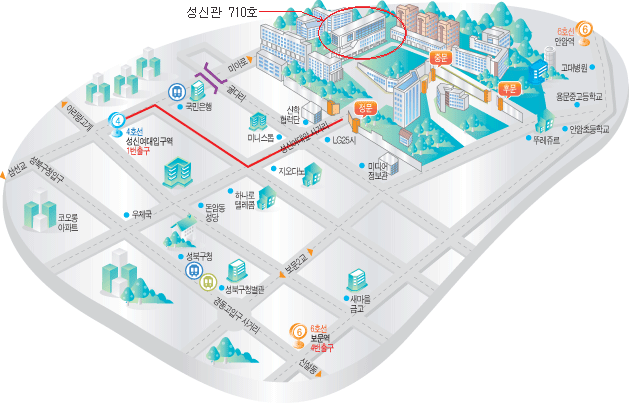

한국정보과학회 프로그래밍언어연구회 겨울학교
(SIGPL Winter School 2010)
|
일시: 2010년 2월 19일(금)
장소: 성신여자대학교 성신관 710호
|
|---|
한국정보과학회 프로그래밍언어 연구회(SIGPL)는 매년 여름과 겨울 방학기간에 대학원생과 엔지니어, 교수, 연구자들을 대상으로 계절학교를 개최하고 있습니다. 이번 겨울학교에는 병렬프로그래밍, 타입 이론, 함수형 프로그래밍, 소프트웨어 저작권과 관련된 강의가 준비되어 있습니다. 많은 관심과 참여를 부탁드립니다.
한국정보과학회 프로그래밍언어연구회 운영위원장 변석우
프로그램 일정
| 09:30-09:45 | 등록 | | | 오전 세션 |
|---|
|
09:45-10:45 | 직렬로 생각하는 버릇 깨기 (Breaking Sequential Habits of Thought) 1 | 류석영 (KAIST) | |
11:00-12:00 | 직렬로 생각하는 버릇 깨기 (Breaking Sequential Habits of Thought) 2 | 류석영 (KAIST) | | 오후 세션 |
|---|
|
13:30-14:45 | Programming with dependent types | 이계식 (서울대) | |
15:00-16:15 | 모나드와 모나드 트랜스포머를 이용하는 프로그래밍 | 변석우 (경성대) | |
16:30-17:45 | 소프트웨어 저작권 보호를 위한 코드 도용 탐지 방법 | 임현일 (KAIST)
| |
등록안내
- 등록비
| | 학생회원 | 일반회원 | 비회원 |
|---|
| 등록비 | 80,000원 | 120,000원 | 150,000원 |
|---|
- 중식/석식 제공
- 등록 방법: 등록페이지를 통하여 등록
- 제한된 예산 내에서 지원이 필요한 학생회원에게 등록비 일부를 지원할 예정입니다. 등록비 지원이 필요하신 분은 이메일
 로 등록 전에 미리 신청 바랍니다. (이 경우 현금 이체 사전등록만 가능)
로 등록 전에 미리 신청 바랍니다. (이 경우 현금 이체 사전등록만 가능)
준비위원회
- 학술위원장: 신승철 교수 (한국기술교육대학교)
- 조직위원장: 김도형 교수 (성신여자대학교)
- 문의: 안준선 교수 (한국항공대학교, 010-6208-5593, )
장소안내
성신여자대학교 오시는 길
- 주소: 서울특별시 성북구 동선동3가 249-1 (동선동길 54-7)
- 전화: 02-920-7114
- 버스
- 성신여대 입구: 101, 102, 103, 104, 106, 107, 140, 142, 143, 149, 150, 152, 160, 161, 162, 171, 172, 1162, 1212
- 성북구청 입구: 103, 142, 152, 272, 1014, 1111
- 지하철: 4호선 성신대입구역 또는 6호선 보문역 4번 출구에서 하차하시고 10분 정도 이동하시면 됩니다.
학교내부에서 행사장소까지 오시는 길
